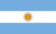
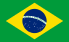
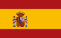
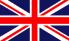

Nombre: Juan Manuel Fangio
Apodo: El chueco, el Maestro
Nacionalidad:
Fecha de nacimiento: 24 de junio de 1911
Estado actual: Retirado
Equipos: Alfa Romeo, Maserati, Mercedes y Ferrari
Victorias: 24

Nombre: Michael Schumacher
Apodo: Schumi, Káiser
Nacionalidad:

Fecha de nacimiento: 3 de enero de 1969
Estado actual: Retirado
Equipos: Jordan, Benetton, Ferrari y Mercedes
Victorias: 91

Nombre: Ayrton Senna da Silva
Apodo: Beco, Magic Senna, O Chefe
Nacionalidad:
Fecha de nacimiento: 21 de marzo de 1960
Estado actual: Retirado
Equipos: Toleman, Lotus, McLaren y Williams
Victorias: 41

Nombre: Fernando Alonso Díaz
Apodo: Magic, El Nano
Nacionalidad:
Fecha de nacimiento: 29 de julio de 1981
Estado actual: Activo
Equipos: Minardi, Renault, McLaren, Ferrari, Alpine, Aston Martin
Victorias: 32

Nombre: Lewis Carl Davidson Larbalestier Hamilton
Apodo: Hammer, Hammerhead Shark
Nacionalidad:
Fecha de nacimiento: Hammer , Hammerhead Shark
Estado actual: Activo
Equipos: McLaren, Mercedes
Victorias: 103